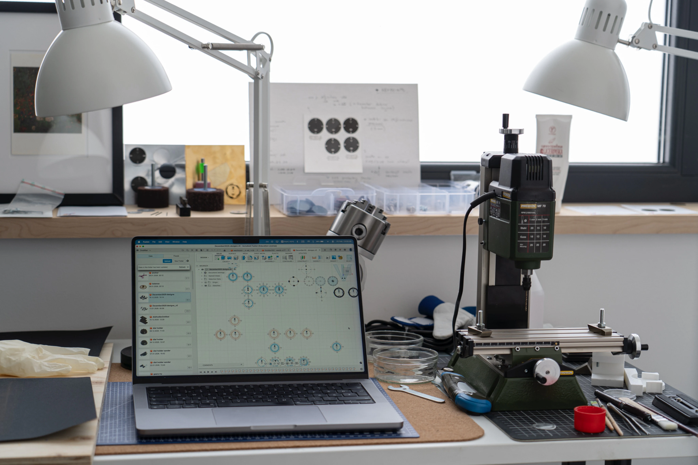
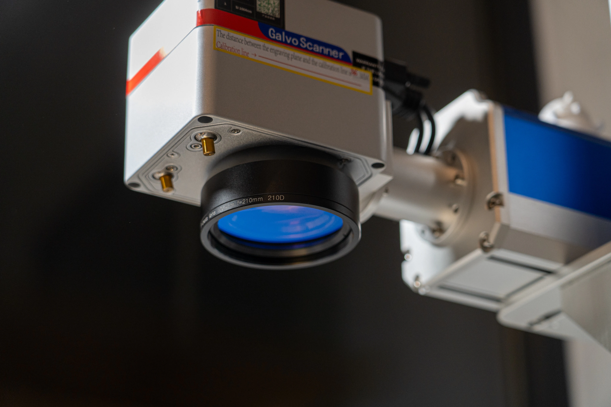
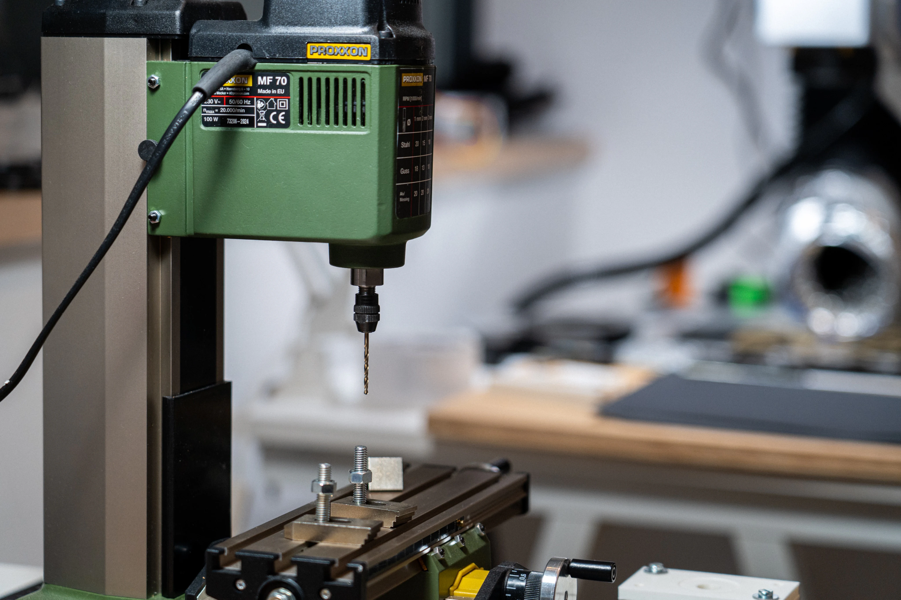
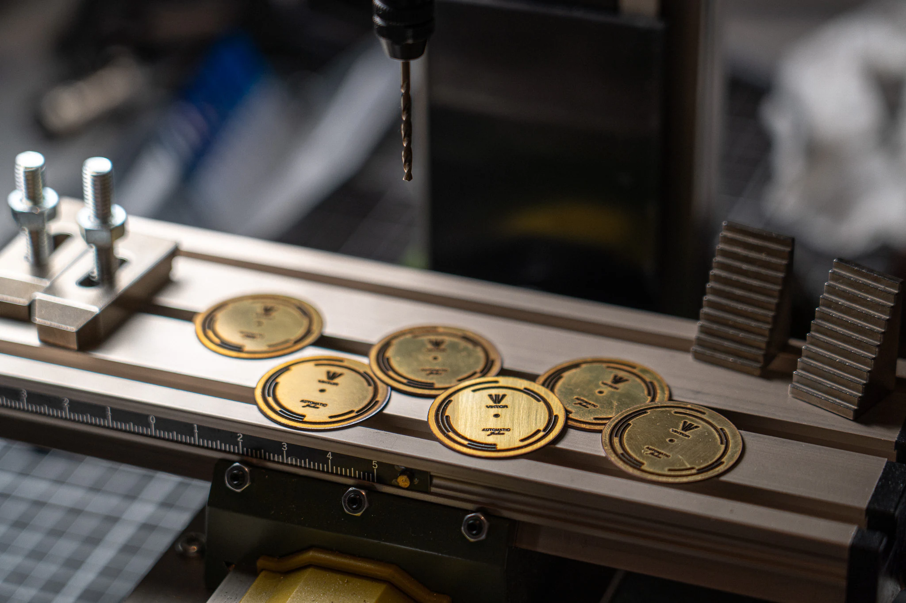
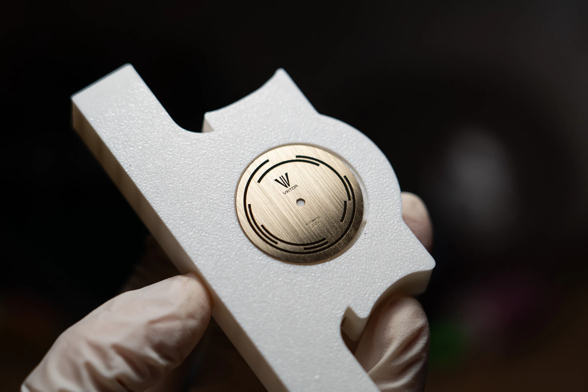
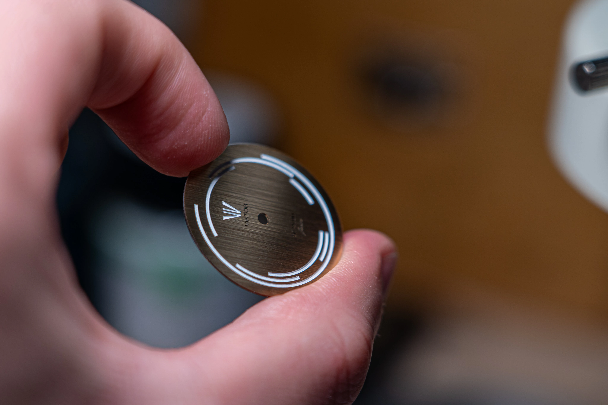
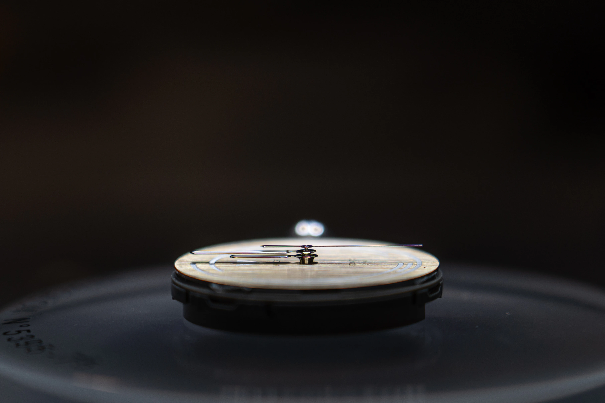

The Story
A brand that started in a guy’s bedroom.
Viktor Watch started as a simple idea: make something real, slowly, carefully, and with enough conviction that it could stand on its own.
Where it starts
Not mass-produced. Built with hands.
A small record of the workshop, the repeated work, and the details that become part of every finished watch.

The workshop
Every piece starts here.
The fixtures, the dust, the failed parts, and the repeated sanding are not separate from the watch. They are the reason the final object has weight.

Workshop note
Everything starts with CAD.
Every watch dial was one just a sketch, later turned into a model, and then exported into a laser-cutting software. The process of getting the right laser settings was excruciating, and was probably the thing that took me the longest to figure out. I'm not exaggerating when I say that I spent more than a year just trying to cut the dials correctly.

The physical work
Good objects carry work you no longer see.
Much of the process is repetitive. Some of it has to be redone entirely. Back then, I had no ventilation of any sort, and the stench you get from laser is one of the worst smells immaginable... So glad I no longer bearhe that disgustingly heavy metal stench when working on the blanks.

Workshop note
Centering the dial.
A hole needs to be cut in the middle of the dial for the movement's hands to fit through.. duhh.. The most intersting part of this process was making the jig that holds the dial in place.

Workshop note
CAD and more CAD.
Everything is CAD, everything you see started as a notebook sktech, and then became a 3D model.

Workshop note
The most important "invention" - my sanding jig.
Arguably the thing that made all of this possible, one of the biggest pains in the whole entire process was figuring out how to sand the dials, I just couldn't get a consistent result by hand, no matter how careful I was. The 3D-printed jig I designed to hold the dial in place, was a gamechanger.
Workshop note
Built by me. Always.
These watches are built by me, in my workshop, and always will be. That part of Viktor Watch is not going to change.

Workshop note
Hand-painted under magnification.
Each one is built, assembled, finished, and handled by me from start to finish. Hand-sanded using custom-made fixtures, and hand-painted with a microbrush under magnification.
The result
The process is the product.
Nothing is hidden away, but part of the story and part of the watch itself, shared publicly on X. Fails, highs and lows, the work that goes into every watch is it's own part of it, and I share all of it :]

Workshop note
Every detail was thought through.
A Viktor Watch is not only the final object. It is also every step that led to it.